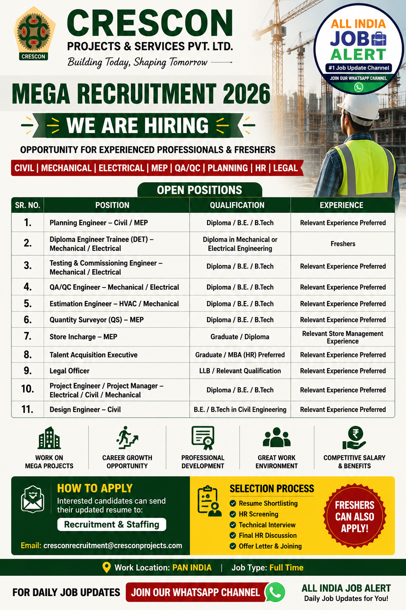

Crescon Projects & Services Pvt. Ltd has officially announced its latest recruitment drive for 2026. The company is inviting applications from talented and experienced candidates for multiple engineering, project management and MEP positions. Candidates with Diploma, B.E., B.Tech, MBA (HR), LLB and other relevant qualifications can apply for various openings.
This recruitment offers an excellent opportunity for freshers as well as experienced professionals to build a successful career in one of India's growing engineering and project management companies. Candidates having experience in Civil, Mechanical, Electrical, QA/QC, HVAC, Quantity Surveying, Planning and Project Management are encouraged to apply.
| S.No | Position | Qualification | Experience |
|---|---|---|---|
| 1 | Planning Engineer – Civil / MEP | Diploma / B.E. / B.Tech | Relevant Experience Preferred |
| 2 | Diploma Engineer Trainee (DET) – Mechanical / Electrical | Diploma Mechanical / Electrical | Freshers |
| 3 | Testing & Commissioning Engineer – Mechanical / Electrical | Diploma / B.E. / B.Tech | Relevant Experience Preferred |
| 4 | QA/QC Engineer – Mechanical / Electrical | Diploma / B.E. / B.Tech | Relevant Experience Preferred |
| 5 | Estimation Engineer – HVAC / Mechanical | Diploma / B.E. / B.Tech | Relevant Experience Preferred |
| 6 | Quantity Surveyor (QS) – MEP | Diploma / B.E. / B.Tech | Relevant Experience Preferred |
| 7 | Store Incharge – MEP | Graduate / Diploma | Relevant Store Experience |
| 8 | Talent Acquisition Executive | Graduate / MBA (HR Preferred) | Relevant Experience Preferred |
| 9 | Legal Officer | LLB / Relevant Qualification | Relevant Experience Preferred |
| 10 | Project Engineer / Project Manager – Electrical / Civil / Mechanical | Diploma / B.E. / B.Tech | Relevant Experience Preferred |
| 11 | Design Engineer – Civil | B.E. / B.Tech Civil | Relevant Experience Preferred |
Crescon Projects & Services Pvt. Ltd. is a fast-growing engineering, construction and project management company delivering high-quality industrial, commercial and infrastructure projects across India. The company provides complete EPC, MEP, electrical, mechanical and civil engineering solutions while maintaining high standards of safety, quality and timely project delivery.
The organization offers excellent career opportunities for fresh graduates as well as experienced professionals. Employees get exposure to modern engineering practices, challenging projects, professional training and long-term career growth. Crescon believes in innovation, teamwork and continuous learning, making it an ideal workplace for engineering professionals.
Selected candidates will be responsible for planning, execution, testing, commissioning, project coordination, quality inspection, billing, estimation and engineering activities depending on the position applied for. Planning Engineers will prepare project schedules and monitor work progress. QA/QC Engineers will ensure quality standards and inspections are followed throughout the project. Testing & Commissioning Engineers will handle installation testing and system commissioning activities. Quantity Surveyors and Estimation Engineers will prepare BOQs, cost estimates and quantity calculations. Project Engineers and Project Managers will coordinate site activities, client communication and overall project execution.
Store Incharge candidates will manage inventory, material records and project stock. Talent Acquisition Executives will handle recruitment and staffing activities while Legal Officers will manage legal documentation and compliance. Design Engineers will prepare engineering drawings and support project execution teams.
Selected candidates will receive an attractive salary package based on qualifications, experience and interview performance. Employees may also receive professional training, career growth opportunities, performance-based increments, exposure to large engineering projects and a healthy working environment with experienced professionals.
Interested and eligible candidates can apply by sending their updated Resume/CV to the official recruitment email mentioned below. Ensure that your resume includes your latest qualifications, work experience, skills and contact details. Mention the position name in the email subject for faster processing.
Official Recruitment Email:
cresconrecruitment@cresconprojects.com
1. Which company is hiring?
Crescon Projects & Services Pvt. Ltd.
2. Can freshers apply?
Yes, Diploma Engineer Trainee (DET) positions are open for freshers.
3. What qualifications are required?
Diploma, B.E., B.Tech, Graduate, MBA (HR) and LLB depending on the position.
4. Is experience mandatory?
Relevant experience is preferred for most positions.
5. How can I apply?
Send your updated resume to the official recruitment email.
6. Is this a full-time job?
Yes.
7. Which departments are hiring?
Civil, Mechanical, Electrical, MEP, HR, Legal and Project Management.
8. What documents are required?
Resume, educational certificates, experience certificates and ID proof.
9. Will only shortlisted candidates be contacted?
Yes.
10. Does Crescon provide career growth?
Yes, employees get opportunities to work on major engineering projects and build long-term careers.
Get daily private jobs, government jobs and walk-in interview updates directly on WhatsApp.
Join WhatsApp Channel